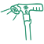

Der Sturz, der alles veränderte: Warum ich den Gehstock meiner Mutter gegen diesen sicheren, intelligenten Gehstock zur Gleichgewichtsunterstützung ausgetauscht habe
(Und warum Sie das auch tun sollten – bevor es zu spät ist)
 Autor: Stacy Miller
Zuletzt aktualisiert:
Autor: Stacy Miller
Zuletzt aktualisiert:

Ich hätte nie gedacht, dass ich meine Mutter einmal am Boden liegen sehen würde. Nicht so.
Aber eines Morgens bekam ich einen Anruf, den Sie hoffentlich nie erhalten werden. Mein Vater war aufgelöst und ich konnte kaum verstehen, was er sagte.
Ich war sofort zur Stelle, nur um meine Mutter vor Schmerzen gekrümmt auf dem Boden zu finden. Sie konnte nicht aufstehen.
Vater fand sie im Flur liegend. Sie hatte versucht, nachts aufzustehen, um zur Toilette zu gehen, und ihr Gehstock – der, von dem wir alle dachten, er sei „in Ordnung“ – war unter ihrem Gewicht zusammengebrochen.
Sie hatte eine Hüftprellung. Ein verstauchtes Handgelenk. Und das Schlimmste: ihr Selbstvertrauen war zerstört.
Am nächsten Tag weigerte sie sich, das Bett zu verlassen. Sie wollte nicht mehr spazieren gehen. Dieser eine Sturz erschütterte nicht nur ihren Körper – er erschütterte ihre Unabhängigkeit.
Denn dieser Sturz hätte tödlich sein können.
Sie ist 87 Jahre alt. Und nach diesem Tag lernte ich die schmerzhafte Wahrheit:
Jedes Jahr stürzen in den USA über 36 Millionen Senioren. Und über 32.000 dieser Stürze enden tödlich.
Wenn das Hilfsmittel, das sie schützen sollte, zur Ursache ihres Unglücks wird
Es geht nicht nur um einen blauen Fleck oder Angst.
Es geht darum, was danach passiert.
Ein Sturz führt oft zu Operationen, Immobilität, dauerhafter Pflegebedürftigkeit – und sogar zum Tod. Und in vielen Fällen ist die Ursache dieselbe:
Entworfen für Komfort. Nicht für Stabilität oder Sicherheit.
Der Gehstock, den meine Mutter benutzte, „sah gut aus“... aber er war minderwertig.
Er klappte zu leicht zusammen. Er lag unbequem in der Hand. Schwer an den falschen Stellen und instabil an der Basis.
Er beleuchtete ihren Weg nicht. Er half ihr nicht beim Aufstehen. Er stand nicht von selbst. Er war eher ein Modeaccessoire als ein medizinisches Gerät. Und doch... verlassen sich Millionen von Menschen jeden Tag auf genau solche Gehstöcke.
Klapprige Faltstöcke aus der Apotheke. Überteuerte „modische“ Stöcke ohne ergonomische Unterstützung. Medizinisch aussehende Monster, die „Schwäche“ schreien. Kein Wunder, dass so viele ältere Menschen das Haus gar nicht mehr verlassen. Sie fühlen sich unsicher, beschämt und ängstlich.
Aber ich wollte nicht zulassen, dass dies die Geschichte meiner Mutter wird.

Da erzählte mir meine Freundin, eine Physiotherapeutin, von dem einzigen Gehstock, dem sie vertraut.
In Panik rief ich meine enge Freundin Natalie an. Sie ist lizenzierte Physiotherapeutin und eine der klügsten, mitfühlendsten Personen, die ich kenne. Ich brauchte Rat – sofort.
Als ich ihr erzählte, was passiert war, sagte sie sofort: „Du musst ihr den Intelligenten Coeurva Gehstock besorgen.“
Sie sagte mir, dass dies der einzige Gehstock sei, den sie ihren Patienten nach Operationen und alternden Klienten empfiehlt.
Es ist mehr als ein Gehstock. Es ist ein intelligentes Mobilitätssystem, das den ganzen Körper unterstützt.
Und er hat viele Funktionen, die das Leben einfach leichter und sicherer machen. Als ich ihn in Aktion sah, verstand ich warum.
Warum verlieren Senioren das Gleichgewicht? (Und wie der „bionische Knöchel“ dies korrigiert)
Mit dem Alter lassen unser Gleichgewichtssinn und die Muskelreaktionen nach. Das ist ein natürlicher Prozess, der dazu führt, dass ein gewöhnlicher „Stock“ mit einer einzigen Gummispitze nutzlos wird. Wenn Sie den Schwerpunkt verlieren, rutscht ein gewöhnlicher Stock weg, anstatt Sie zu stützen.
Der Intelligente Coeurva Gehstock funktioniert anders. Er wurde speziell entwickelt, um Gleichgewichtsprobleme bei Senioren zu lösen.
Er ist mit einer einzigartigen, drehbaren Basis mit vier Stützpunkten ausgestattet, die wie ein „zweiter menschlicher Knöchel“ funktioniert.
Mechanische Stabilisierung: Die Basis passt den Neigungswinkel automatisch an den Untergrund an.
4 Kontaktpunkte: Sorgen für Halt dort, wo ein gewöhnlicher Stock wegrutschen würde.
Selbststehende Konstruktion: Der Stock fällt nicht um, wenn Sie ihn loslassen, sodass Sie sich nicht bücken müssen (was eine häufige Sturzursache ist!).
Das ist nicht nur eine Stütze – das ist ein stabiles Fundament, das Ihnen bei jedem Schritt Gleichgewicht „leiht“.

Der Intelligente Coeurva Gehstock besteht nicht aus billigem Plastik oder hohlem Aluminium. Er ist aus einer eloxierten Aluminiumlegierung in Luftfahrtqualität gefertigt – stark genug für den täglichen Gebrauch, aber so leicht, dass er in der Hand fast nichts wiegt.
Er lässt sich in einer fließenden Bewegung zusammenfalten, sicher verriegeln und passt sich dank eines werkzeuglosen Mechanismus Ihrer Körpergröße an, der tatsächlich hält – kein Verrutschen oder Zusammenklappen mehr. Und das ist nicht alles.
Der verstellbare Seitengriff erleichtert das Aufstehen von Sofas, Stühlen und sogar aus dem Auto – er bietet einen zweiten Stützpunkt für sicheres und flüssiges Aufstehen.
Seine breite, rutschfeste Basis mit vier Füßen haftet am Boden wie ein Trekkingstock und hält Sie stabil auf allem, von rutschigen Fliesen bis zu rissigen Gehsteigen.
Und die intelligenten Funktionen? Dieser Stock denkt für Sie mit.

Eingebautes LED-Licht beleuchtet dunkle Wege für sicheres Gehen in der Nacht.
 Ein-Klick-Notfallalarm kann in Sekunden Hilfe rufen, wenn Sie stürzen oder sich unsicher fühlen.
Ein-Klick-Notfallalarm kann in Sekunden Hilfe rufen, wenn Sie stürzen oder sich unsicher fühlen.
Weiche, ergonomische Griffe reduzieren die Ermüdung von Händen und Handgelenken, selbst bei ganztägigem Gebrauch.
 Kompakte, reisefreundliche Form, die in die meisten Handtaschen und Gepäckfächer passt.
Kompakte, reisefreundliche Form, die in die meisten Handtaschen und Gepäckfächer passt.
Das ist kein Gehstock, um irgendwie durchzukommen.
Es ist ein Gehstock, um zurückzukehren – zurück zu sicherem Gehen, einem unabhängigen Leben und Bewegung ohne Angst.
Als ich zum ersten Mal sah, wie meine Mutter ohne schmerzverzerrtes Gesicht aufstand, ohne Zögern... musste ich fast weinen. Das war nicht nur Mobilität. Das war Selbstvertrauen. Das war sie, wie sie zu ihrer alten Form zurückfand.
Also, egal ob Sie sich von einer Operation erholen, mit Arthritis zu kämpfen haben oder einfach im Alter zusätzliche Sicherheit benötigen...
Der Intelligente Coeurva Gehstock ist der Standard, den jeder andere Gehstock anstreben sollte.
Empfohlen von Physiotherapeuten, Orthopäden und Mobilitätsexperten.
Meine Freundin Natalie ist lizenzierte Physiotherapeutin, die jede Woche Dutzende von Patienten sieht – Menschen nach Hüftoperationen, Knieersatz und mit chronischen Gleichgewichtsproblemen. Und sie sagte:

"Ich habe jahrelang jede Art von Gehhilfe empfohlen – aber dem Intelligenten Coeurva Gehstock vertraue ich am meisten. Er ist stark, unterstützend und vielseitig genug, um Patienten in jeder Phase der Genesung zu helfen. Ich habe gesehen, welch riesigen Unterschied er macht."
Natalie P., Physiotherapeutin, MPT
Und sie ist nicht die einzige.
Dr. Alan Reese, zertifizierter Orthopäde mit über 25 Jahren klinischer Erfahrung, empfiehlt den Intelligenten Coeurva Gehstock nun vielen seiner alternden Patienten. Besonders jenen mit Arthritis, postoperativer Instabilität oder altersbedingter Schwäche.

"Als ich die Verarbeitungsqualität und das durchdachte Design des Intelligenten Coeurva Gehstocks sah, begann ich sofort, ihn meinen älteren Patienten zu empfehlen. Es ist nicht nur ein Gehstock – es ist ein Mobilitätssystem. Und wenn Menschen sich stabiler fühlen, bewegen sie sich mehr. Wenn sie sich mehr bewegen, leben sie besser."
Dr. Alan Reese, MD, Orthopäde
Skoro jest wystarczająco dobra dla profesjonalistów, była wystarczająco dobra dla mojej mamy. I teraz używa jej każdego dnia.
Und Natalie ist nicht die einzige, die ihn in Aktion gesehen hat. Auch ihre Patienten melden sich zu Wort:
"Er ist viel leichter als ich erwartet hatte, aber er stützt mich trotzdem. Ich fühle mich einfach wohler, wenn ich ihn habe."
Evelyn J.
"Ich dachte nicht, dass ich das Licht oft benutzen würde, aber jetzt benutze ich es jede Nacht. Ein echter Lebensretter."
George T.
"So einfach zu falten und zu tragen. Ich habe ihn in meiner Handtasche. Er klappt schnell auf und wackelt nie."
Linda S.
"Der Alarm gibt mir ein sichereres Gefühl, wenn ich draußen bin. Ich kann mir ein Leben ohne ihn jetzt nicht mehr vorstellen!"
Betty L.
Das Beste am Intelligenten Coeurva Gehstock ist der Preis
Eine solche Unterstützung hat normalerweise einen hohen Preis.
Die meisten Gehstöcke mit der Hälfte dieser Funktionen kosten weit über 100 Dollar... und das ohne Premium-Materialien oder eingebaute Sicherheitstechnologie.
Aber der Intelligente Coeurva Gehstock ist nicht nur besser. Er ist schockierend erschwinglich. Im Moment können Sie ihn für nur 59,99 € bekommen – das sind 50% Rabatt auf den regulären Preis von 119,98 €!
Suchen Sie nach noch größeren Ersparnissen? Kaufen Sie im Set und erhalten Sie sie schon für 41,99 € pro Stück – das ist ein riesiger Rabatt von 65%!
Für weniger als die Kosten einer Tankfüllung erhalten Sie:
Eingebautes LED-Licht und Notfallalarm
Unterstützung durch Doppelgriff und geländegängige Basis
Sorgenfreiheit jedes Mal, wenn Sie aufstehen, ausgehen oder durch den Raum gehen
Und hier ist der Haken... Diese Gehstöcke wurden für Seniorenheime entwickelt und erst kürzlich für die Öffentlichkeit freigegeben.
Und sie verkaufen sich aufgrund des reduzierten Preises schneller als irgendjemand vorhergesagt hat.
Es ist also nur eine Frage der Zeit, bis sie komplett ausverkauft sind.
Und wenn das passiert?
Nun, dann verpassen Sie die Gelegenheit einfach.
Das bedeutet, dass Sie warten müssen, bis eine neue Charge produziert wird – was Wochen, wenn nicht Monate dauern kann.
Gehen Sie kein Risiko ein – Ändern Sie es heute
Ich bin nur jemand, der zugesehen hat, wie seine Mutter fiel – und etwas fand, das ihr endlich half, sich sicher zu fühlen und wieder auf die Beine zu kommen.
Ich war an Ihrer Stelle – unsicher, besorgt und hoffend, dass es vielleicht etwas gibt, das wirklich helfen könnte. Deshalb teile ich das mit Ihnen.
Ich weiß, dass ich nicht jeden Sturz verhindern kann. Aber wenn diese Nachricht auch nur eine Familie erreicht – wenn sie auch nur eine Person davor bewahrt, das durchzumachen, was wir durchgemacht haben – dann war es das wert.
Denn der Intelligente Coeurva Gehstock hat für uns den Unterschied gemacht. Und wenn Sie sich immer noch nicht sicher sind? Das ist in Ordnung.

Der Intelligente Coeurva Gehstock bietet ein 30-tägiges Rückgaberecht. Sie oder Ihr Angehöriger können damit gehen, reisen und ihn im Alltag testen.
Wenn er nicht passt – schicken Sie ihn zurück. Keine Probleme. Kein Stress. Volle Rückerstattung. Aber warten Sie nicht zu lange.
Die Bestände sind niedrig aufgrund der hohen Nachfrage von Reha-Kliniken und Altenpflegeanbietern.
Und dieses Angebot wird nicht ewig dauern.
Warten Sie nicht auf den zweiten Sturz, um etwas zu ändern.
Geben Sie sich selbst oder jemandem, den Sie lieben, die Unterstützung, die sie brauchen.
Klicken Sie unten, um Ihren Intelligenten Coeurva Gehstock jetzt zu bestellen und bis zu 65% zu sparen, solange der Vorrat reicht.

Denken Sie daran: Ihr Kauf ist durch unsere Geld-zurück-Garantie geschützt.
P.S. Wenn Sie feststellen, dass der Intelligente Coeurva Gehstock Ihnen oder Ihrem Angehörigen genauso hilft wie uns, hoffe ich, dass Sie Ihre Geschichte teilen. Je mehr wir darüber sprechen, desto mehr können wir anderen helfen, lebensverändernde Unterstützung zu entdecken – und Unternehmen wie Coeurva dabei helfen, das zu tun, was sie am besten können: Qualitätsprodukte herzustellen, die sich wirklich um die Menschen kümmern, die wir lieben.
Evelyn J.
Verifizierter Kunde

"Er ist viel leichter als ich erwartet hatte, aber er stützt mich trotzdem wirklich gut. Ich nehme ihn überall hin mit."
George T.
Verifizierter Kunde
"Das eingebaute Licht ist wirklich nützlich für nächtliche Toilettengänge. Ich dachte nicht, dass ich es brauchen würde, aber jetzt benutze ich es die ganze Zeit."
Linda S.
Verifizierter Kunde
"So einfach zu falten und zu tragen. Ich habe ihn in meiner Handtasche und hole ihn raus, wenn ich ihn brauche. Kein Aufwand."
Mark R.
Verifizierter Kunde
"Ich liebe es, wie stabil dieser Stock ist. Er wackelt nicht wie andere, die ich ausprobiert habe. Er klappt schnell auf und fühlt sich solide an."
Betty L.
Verifizierter Kunde
"Die Alarmfunktion gibt mir ein viel sichereres Gefühl, wenn ich alleine draußen bin. Es ist gut zu wissen, dass ich auf mich aufmerksam machen kann, falls ich jemals Hilfe brauche."
Tom W.
Verifizierter Kunde
"Ich habe ein paar ausprobiert, aber dieser ist mein Favorit. Bequeme Höhe, toller Griff und er steht von alleine."
NUR FÜR KURZE ZEIT!
Stacy ist eine begeisterte Outdoor-Liebhaberin, liebt aber auch die neuesten Technologien und Gadgets. Sie hat drei Söhne im Alter von 7 bis 16 Jahren. Stacy liebt französischen Wein und Stand-up-Comedy.